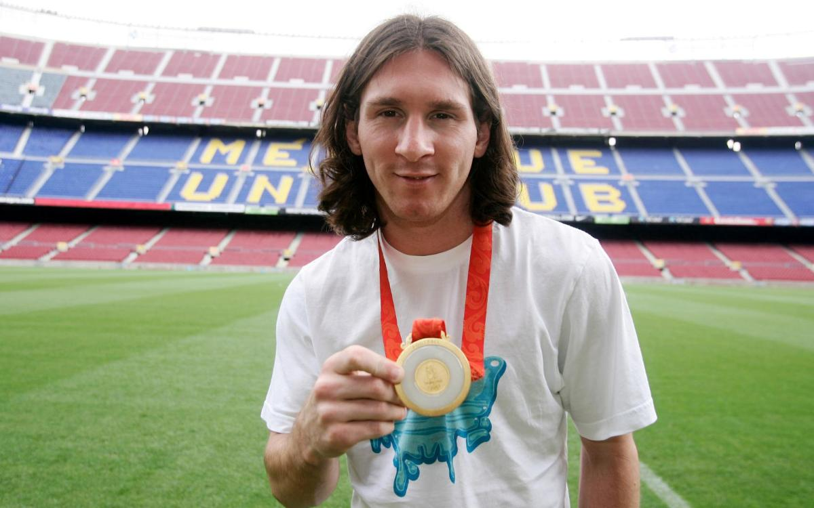
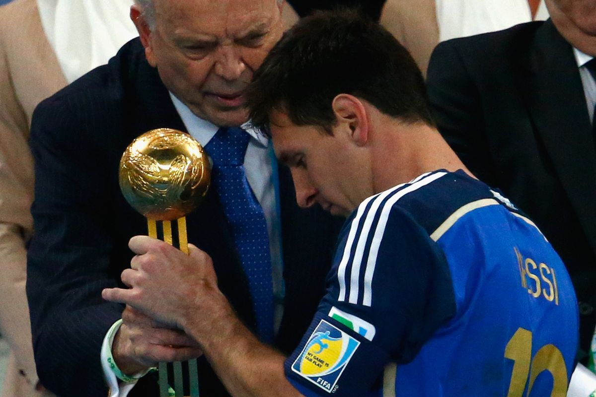

Club Trophies
Lionel Messi is a soccer player with FC Barcelona and the Argentina national team.
Personal Titles
Lionel Messi is a soccer player with FC Barcelona and the Argentina national team.
Stadium
The Estadio Alberto J. Armando is an association football stadium located in La Boca district of Buenos Aires. Widely known as La Bombonera due to its shape, with a "flat" stand on one side of the pitch and three steep stands round the rest of the stadium. It has a capacity of 49,000.